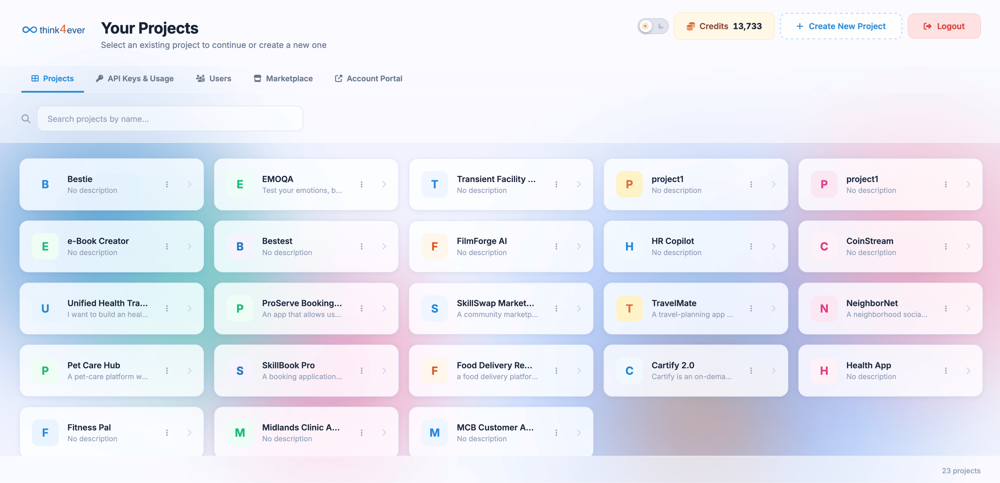
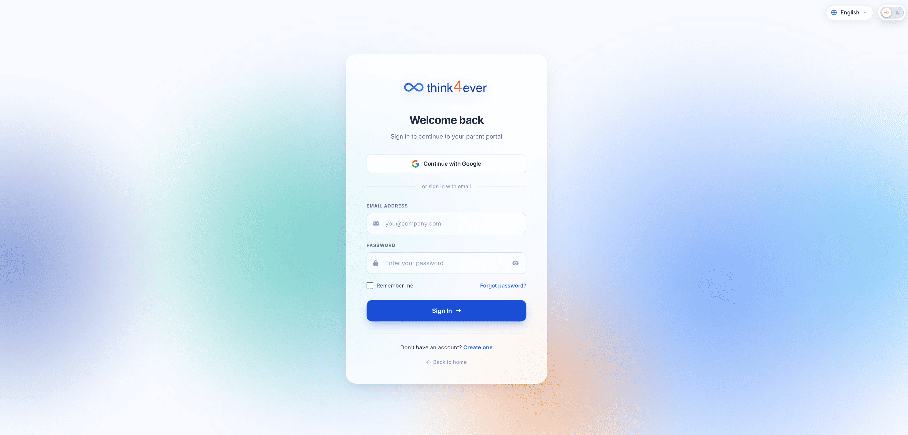
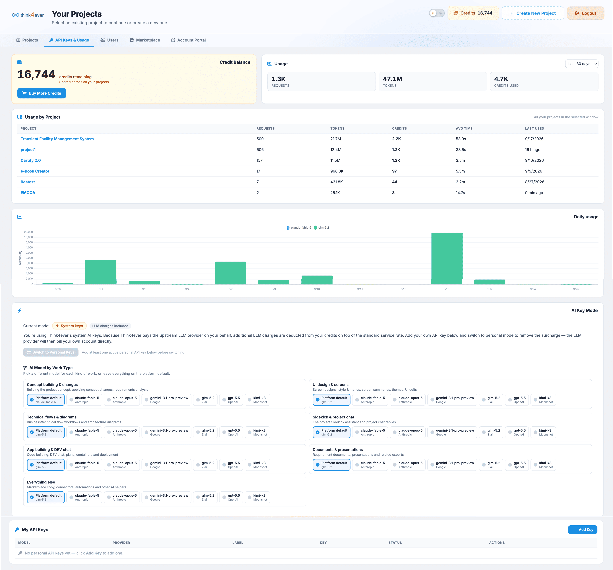
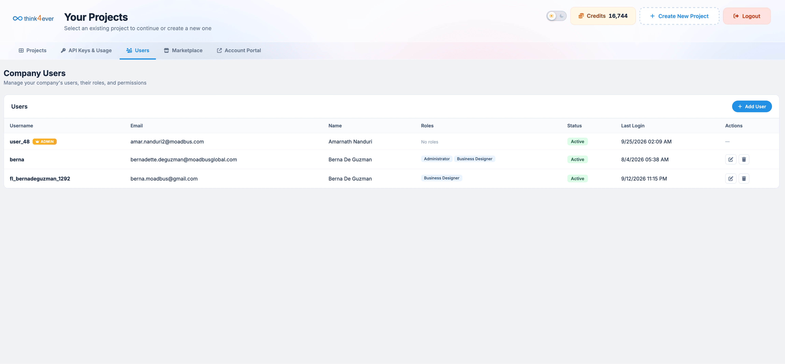
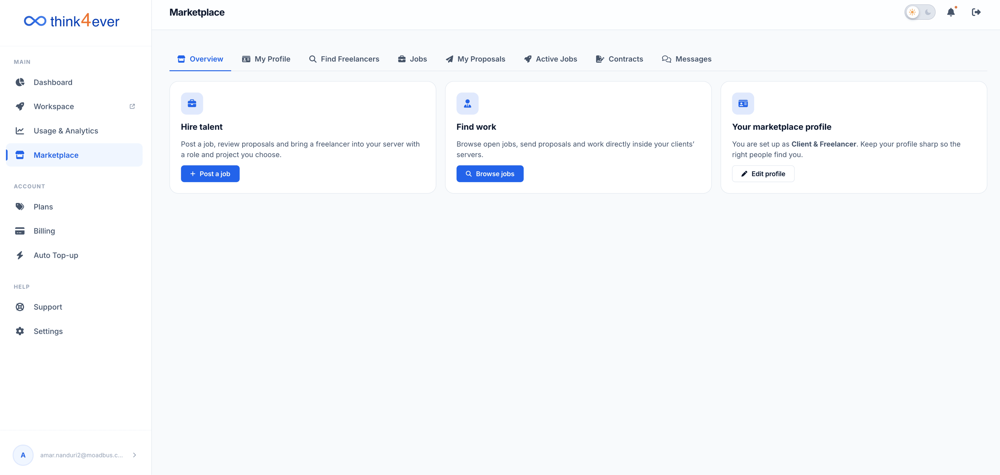
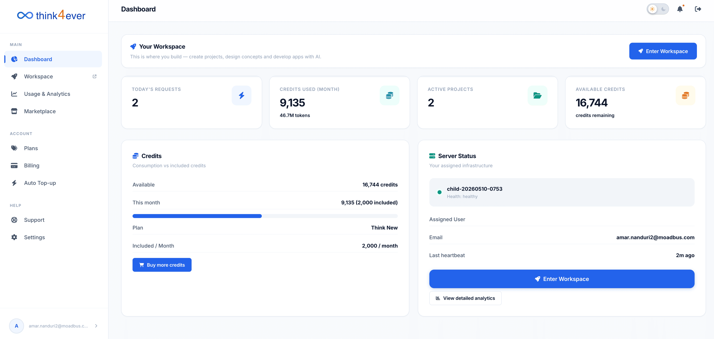

Workspace
The Workspace serves as the main dashboard for managing ongoing projects, generating API credentials, managing team access, and monitoring account usage metrics.

How to access your workspace:
Option 1: Go to Think4ever portal login, use your credentials to sign in.

You will be taken to your Workspace or Project Dashboard.
Option 2: From your Think4ever portal, click on Enter Workspace
You will be taken to your Workspace or Project Dashboard.
Key Components & Navigation
Projects Tab
Purpose: Serves as your primary workspace directory where you can locate, inspect, and organize all current projects.
Key Capabilities & Responsibilities:
- Workspace Selection: View all active project tiles at a glance, showing titles, descriptions, and workspace avatars.
- Real-time Search: Use the real-time filter input to search through large project directories by title.
- Project Creation: Launch new project environments using the + Create New Project setup flow.
- Quick Management: Access individual project settings via the context menu (⋮) on each card to rename, reconfigure, or archive workspaces.
When to Use:
Whenever you need to open an active project workspace, manage workspace settings, or start a new development effort.
API Keys & Usage Tab
Purpose: Provides security controls for managing programmatic access keys and monitoring system resource consumption.
Key Capabilities & Responsibilities:
- API Key Generation & Security: Create, name, and manage secret API keys used for authenticating external applications, SDKs, or automated pipelines.
- Key Revocation: Instantly revoke or cycle compromised API keys to prevent unauthorized platform access.
- Resource Consumption Monitoring: Track real-time usage metrics, automated execution costs, and credit balance consumption.
- Rate Limits & Quotas: Inspect active rate limits, API call frequency thresholds, and endpoint throughput limits.
When to Use:
When integrating Think4ever with external tools, generating developer credentials, auditing credit usage, or troubleshooting API rate limits.

Users
Purpose: Centralizes team governance, access control, and user invitation management across your organization.
Key Capabilities & Responsibilities:
- Team Onboarding: Invite new collaborators, developers, or project managers to your account via email or direct invitation links.
- Role & Permission Assignment: Assign access roles (such as Admin, Developer, Reviewer, or Viewer) to enforce security policies.
- Seat & Access Management: Monitor active seat usage, pending invitations, and revoke permissions for offboarded team members.
- Activity Tracking: Review user activity histories and workspace assignments to maintain security compliance.
When to Use:
When onboarding new staff members, auditing team permissions, or adjusting project access levels for existing collaborators.

Marketplace
Purpose: Launches the integrated recruitment, job board, and freelance collaboration system. When clicked, the Marketplace opens seamlessly in a new browser tab so your current dashboard context remains open
Key Capabilities & Responsibilities:
- Talent Sourcing: Search, filter, and inspect verified freelancer profiles using criteria like hourly rates, skills, location, and ratings.
- Job Posting Management: Create, publish, and manage job listings with fixed or hourly rate models.
- Proposal Review & Hiring: Process incoming applicant bids, review cover letters, and issue binding contracts.
- Workspace Integration: Onboard hired freelancers directly into dedicated project servers with defined access rights.
When to Use:
When hiring external talent, bidding on client jobs, managing submitted proposals, or checking ongoing freelance contracts.

Account Portal Tab
Purpose: Connects to global organization settings, subscription plan management, and financial billing profiles.
Key Capabilities & Responsibilities:
- Subscription Management: View active subscription tiers, upgrade plans, or adjust billing cycles.
- Credit Refills & Auto Top-Up: Purchase additional processing credits or configure automated credit balance top-ups to prevent workflow interruptions.
- Invoices & Payment Methods: Access historical payment receipts, download tax invoices, and manage credit cards or bank details.
- Organization Details: Update global company info, legal entity details, and primary administrative billing contacts.
When to Use:
When updating payment methods, downloading invoices, modifying your platform subscription tier, or purchasing additional credits.
